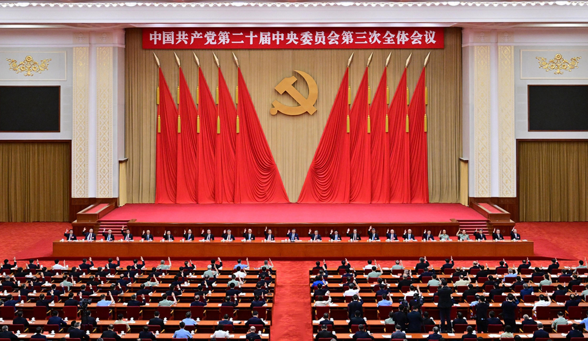

共产党员网
400-00-000xxx
1234567xxx@gmail.com
共产党员网
欢迎访问
首页
组织工作
思想理论
党的历史
先进典型
党政官网
重要动态
IMPORTANT

❮
❯
习近平在省部级主要领导干部学习贯彻党的二十届 三中全会精神专题研讨班开班式上发表重要讲话
10-29
习近平给“关键少数”上的这一课释放哪些重要信息
10-30
广大党员干部放手干事 担当作为 奋战改革发展一线
10-29
中央组织部 司法部联合举办全国青年党员律师培训班
10-27
基层党建 | 国有企业推进产业链供应链创新链党建工作
10-29
党在农村的基层组织有哪些 应当如何设置
10-30
如何理解建立优质文化资源直达基层机制
09-05
重要转载
NEWS CENTER
[中组部动态]
李干杰: 用改革精神和严的标准做好新时代干部监督工作
[中组部动态]
李干杰：健全乡镇(街道)权责体系 持续为基层减负赋能
[中组部动态]
中组部召开改进推动高质量发展的政绩考核工作座谈会
[中组部动态]
中组部等联合举办推进乡村全面振兴专题培训班
[中组部动态]
中央组织部从代中央管理党费中划拨5355万元用于支持海南、广东等地抢险救灾工作
[中组部动态]
中央组织部负责人就《中国共产党不合格党员组织处置办法》答记者问
[党员教育]
江苏南京：“点线面”联动发力 打破党员教育壁垒
[党员教育]
福建永泰：以新媒体技术 打出党员教育组合拳
[党员教育]
上海杨浦：“微党课”讲出新意 为党员教育增实效
[党员教育]
四川珙县：坚持“四步联动”做实党员教育工作
[党员教育]
内蒙古自治区扎兰屯市：运用“三新”手段提升党员教育新成效
[党员教育]
安徽省合肥市庐江县：推动党员教育电视片制作出新出彩出效
[先锋文汇]
瞄准“人民至上”走好“何以为民”全面深改路
[先锋文汇]
多向发力让改革托起群众“稳稳的幸福”
[先锋文汇]
以系统思维让全面深化改革“蹄疾而步稳”
[先锋文汇]
“永不止步”让党纪学习教育“有度可循”
[先锋文汇]
文化强国当“以文载道、以文传声、以文化人”
[先锋文汇]
答好“三问” 让党课教育“走深、走实、走新”
 400-00-000xxx
400-00-000xxx 1234567xxx@gmail.com
1234567xxx@gmail.com